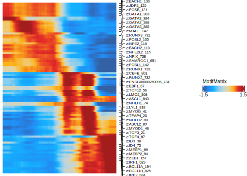
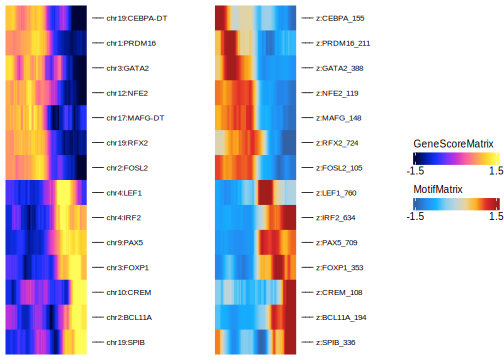

18.2 Lymphoid Trajectory - B Cell Cifferentiation
As a second example of a trajectory, we will create a B cell trajectory from progenitor cells, through the common lymphoid progenitor and pre-B cell all the way to fully differentiated B cells. Because this analysis is essentially repeated from the monocyte trajectory in the previous section, we do not provide explanations for the code snippets. If you are trying to learn how to perform trajectory analysis, check out the monocyte trajectory section in this chapter instead.
For reference, this is what our clusters look like:
p1 <- plotEmbedding(ArchRProj = projHeme5, colorBy = "cellColData", name = "Clusters", embedding = "UMAP")
## ArchR logging to : ArchRLogs/ArchR-plotEmbedding-371b05719caeb-Date-2022-12-23_Time-09-05-07.log
## If there is an issue, please report to github with logFile!
## Getting UMAP Embedding
## ColorBy = cellColData
## Plotting Embedding
## 1
## ArchR logging successful to : ArchRLogs/ArchR-plotEmbedding-371b05719caeb-Date-2022-12-23_Time-09-05-07.log
p2 <- plotEmbedding(ArchRProj = projHeme5, colorBy = "cellColData", name = "Clusters2", embedding = "UMAP")
## ArchR logging to : ArchRLogs/ArchR-plotEmbedding-371b077f587d0-Date-2022-12-23_Time-09-05-10.log
## If there is an issue, please report to github with logFile!
## Getting UMAP Embedding
## ColorBy = cellColData
## Plotting Embedding
## 1
## ArchR logging successful to : ArchRLogs/ArchR-plotEmbedding-371b077f587d0-Date-2022-12-23_Time-09-05-10.log
ggAlignPlots(p1, p2, type = "h")
18.2.1 Pseudo-time UMAPs and individual feature plots
The trajectory we will use will span from “Progenitor” to a lymphoid progenitor cell (“CLP”) to a “PreB” cell, and finally to a mature “B” cell.
trajectory <- c("Progenitor", "CLP", "PreB", "B")
trajectory
## [1] "Progenitor" "CLP" "PreB" "B"projHeme5 <- addTrajectory(
ArchRProj = projHeme5,
name = "LymphoidU",
groupBy = "Clusters2",
trajectory = trajectory,
embedding = "UMAP",
force = TRUE
)
## ArchR logging to : ArchRLogs/ArchR-addTrajectory-371b051ecf2bb-Date-2022-12-23_Time-09-05-15.log
## If there is an issue, please report to github with logFile!
## Filtering outliers
## Initial Alignment Before Spline Fit
## Spline Fit
## KNN to Spline
## ArchR logging successful to : ArchRLogs/ArchR-addTrajectory-371b051ecf2bb-Date-2022-12-23_Time-09-05-15.loghead(projHeme5$LymphoidU[!is.na(projHeme5$LymphoidU)])
## [1] 79.5847751 80.1470588 79.7145329 81.0986159 0.9948097 82.5692042p <- plotTrajectory(projHeme5, trajectory = "LymphoidU", colorBy = "cellColData", name = "LymphoidU")
## ArchR logging to : ArchRLogs/ArchR-plotTrajectory-371b03fb639ef-Date-2022-12-23_Time-09-05-16.log
## If there is an issue, please report to github with logFile!
## Plotting
## Plotting Trajectory
## Adding Inferred Arrow Trajectory to Plot
## ArchR logging successful to : ArchRLogs/ArchR-plotTrajectory-371b03fb639ef-Date-2022-12-23_Time-09-05-16.log
p[[1]]
## Warning: Removed 7938 rows containing non-finite values (stat_summary_hex).
p1 <- plotTrajectory(projHeme5, trajectory = "LymphoidU", colorBy = "GeneScoreMatrix", name = "PAX5", continuousSet = "horizonExtra")
## Getting ImputeWeights
## ArchR logging to : ArchRLogs/ArchR-plotTrajectory-371b04053155b-Date-2022-12-23_Time-09-05-23.log
## If there is an issue, please report to github with logFile!
## Getting Matrix Values...
## 2022-12-23 09:05:26 :
##
## Imputing Matrix
## Using weights on disk
## Using weights on disk
## Plotting
## Plotting Trajectory
## Adding Inferred Arrow Trajectory to Plot
## ArchR logging successful to : ArchRLogs/ArchR-plotTrajectory-371b04053155b-Date-2022-12-23_Time-09-05-23.log
p2 <- plotTrajectory(projHeme5, trajectory = "LymphoidU", colorBy = "GeneIntegrationMatrix", name = "PAX5", continuousSet = "blueYellow")
## Getting ImputeWeights
## ArchR logging to : ArchRLogs/ArchR-plotTrajectory-371b049350b0-Date-2022-12-23_Time-09-05-33.log
## If there is an issue, please report to github with logFile!
## Getting Matrix Values...
## 2022-12-23 09:05:36 :
##
## Imputing Matrix
## Using weights on disk
## Using weights on disk
## Plotting
## Plotting Trajectory
## Adding Inferred Arrow Trajectory to Plot
## ArchR logging successful to : ArchRLogs/ArchR-plotTrajectory-371b049350b0-Date-2022-12-23_Time-09-05-33.log
ggAlignPlots(p1[[1]], p2[[1]], type = "h")
## Warning: Removed 7938 rows containing non-finite values (stat_summary_hex).
## Removed 7938 rows containing non-finite values (stat_summary_hex).
ggAlignPlots(p1[[2]], p2[[2]], type = "h")
## `geom_smooth()` using method = 'gam' and formula 'y ~ s(x, bs = "cs")'
## `geom_smooth()` using method = 'gam' and formula 'y ~ s(x, bs = "cs")'
18.2.2 Pseudo-time heatmaps
trajMM <- getTrajectory(ArchRProj = projHeme5, name = "LymphoidU", useMatrix = "MotifMatrix", log2Norm = FALSE)
## Creating Trajectory Group Matrix..
## Some values are below 0, this could be a DeviationsMatrix in which scaleTo should be set = NULL.
## Continuing without depth normalization!
## Smoothing...
p1 <- plotTrajectoryHeatmap(trajMM, pal = paletteContinuous(set = "solarExtra"))
## ArchR logging to : ArchRLogs/ArchR-plotTrajectoryHeatmap-371b0320e7d0e-Date-2022-12-23_Time-09-06-01.log
## If there is an issue, please report to github with logFile!
## useSeqnames is NULL or greater than 1 with a Sparse.Assays.Matrix trajectory input.
## 2022-12-23 09:06:02 :
## force=FALSE thus continuing with subsetting useSeqnames = z
## 2022-12-23 09:06:02 :
## Preparing Main Heatmap..
## 'magick' package is suggested to install to give better rasterization.
##
## Set `ht_opt$message = FALSE` to turn off this message.
## ArchR logging successful to : ArchRLogs/ArchR-plotTrajectoryHeatmap-371b0320e7d0e-Date-2022-12-23_Time-09-06-01.log
p1
trajGSM <- getTrajectory(ArchRProj = projHeme5, name = "LymphoidU", useMatrix = "GeneScoreMatrix", log2Norm = TRUE)
## Creating Trajectory Group Matrix..
## Smoothing...
p2 <- plotTrajectoryHeatmap(trajGSM, pal = paletteContinuous(set = "horizonExtra"))
## ArchR logging to : ArchRLogs/ArchR-plotTrajectoryHeatmap-371b06797cb6e-Date-2022-12-23_Time-09-06-24.log
## If there is an issue, please report to github with logFile!
## Preparing Main Heatmap..
## 'magick' package is suggested to install to give better rasterization.
##
## Set `ht_opt$message = FALSE` to turn off this message.
## ArchR logging successful to : ArchRLogs/ArchR-plotTrajectoryHeatmap-371b06797cb6e-Date-2022-12-23_Time-09-06-24.log
p2
trajGIM <- getTrajectory(ArchRProj = projHeme5, name = "LymphoidU", useMatrix = "GeneIntegrationMatrix", log2Norm = FALSE)
## Creating Trajectory Group Matrix..
## Smoothing...
p3 <- plotTrajectoryHeatmap(trajGIM, pal = paletteContinuous(set = "blueYellow"))
## ArchR logging to : ArchRLogs/ArchR-plotTrajectoryHeatmap-371b0236251ec-Date-2022-12-23_Time-09-06-50.log
## If there is an issue, please report to github with logFile!
## Preparing Main Heatmap..
## 'magick' package is suggested to install to give better rasterization.
##
## Set `ht_opt$message = FALSE` to turn off this message.
## ArchR logging successful to : ArchRLogs/ArchR-plotTrajectoryHeatmap-371b0236251ec-Date-2022-12-23_Time-09-06-50.log
p3
trajPM <- getTrajectory(ArchRProj = projHeme5, name = "LymphoidU", useMatrix = "PeakMatrix", log2Norm = TRUE)
## Creating Trajectory Group Matrix..
## Smoothing...
p4 <- plotTrajectoryHeatmap(trajPM, pal = paletteContinuous(set = "solarExtra"))
## ArchR logging to : ArchRLogs/ArchR-plotTrajectoryHeatmap-371b02d105e37-Date-2022-12-23_Time-09-07-21.log
## If there is an issue, please report to github with logFile!
## Preparing Main Heatmap..
## 'magick' package is suggested to install to give better rasterization.
##
## Set `ht_opt$message = FALSE` to turn off this message.
## ArchR logging successful to : ArchRLogs/ArchR-plotTrajectoryHeatmap-371b02d105e37-Date-2022-12-23_Time-09-07-21.log
p4
To save editable vectorized versions of these plots, we use plotPDF().
plotPDF(p1, p2, p3, p4, name = "Plot-LymphoidU-Traj-Heatmaps.pdf", ArchRProj = projHeme5, addDOC = FALSE, width = 6, height = 8)
## Plotting ComplexHeatmap!
## Plotting ComplexHeatmap!
## Plotting ComplexHeatmap!
## Plotting ComplexHeatmap!18.2.3 Integrative pseudo-time analyses
corGSM_MM <- correlateTrajectories(trajGSM, trajMM)
## ArchR logging to : ArchRLogs/ArchR-correlateTrajectories-371b058cdd862-Date-2022-12-23_Time-09-07-41.log
## If there is an issue, please report to github with logFile!
## Found 12 Correlated Pairings!
## 2022-12-23 09:07:57 :
corGSM_MM[[1]]$matchname1
## [1] "PRDM16" "NFE2" "JDP2" "IRF8" "RFX2" "CEBPA" "SPIB" "FOSL2"
## [9] "BCL11A" "FOXP1" "GATA2" "PAX5"
corGSM_MM[[1]]
## DataFrame with 12 rows and 12 columns
## idx1 idx2 matchname1 matchname2 name1 name2
## <integer> <integer> <character> <character> <character> <character>
## 1 82 1081 PRDM16 PRDM16 chr1:PRDM16 z:PRDM16_211
## 2 5181 989 NFE2 NFE2 chr12:NFE2 z:NFE2_119
## 3 6721 995 JDP2 JDP2 chr14:JDP2 z:JDP2_125
## 4 8690 1503 IRF8 IRF8 chr16:IRF8 z:IRF8_633
## 5 10649 1594 RFX2 RFX2 chr19:RFX2 z:RFX2_724
## ... ... ... ... ... ... ...
## 8 12241 975 FOSL2 FOSL2 chr2:FOSL2 z:FOSL2_105
## 9 12398 1064 BCL11A BCL11A chr2:BCL11A z:BCL11A_194
## 10 15543 1223 FOXP1 FOXP1 chr3:FOXP1 z:FOXP1_353
## 11 15802 1258 GATA2 GATA2 chr3:GATA2 z:GATA2_388
## 12 21499 1579 PAX5 PAX5 chr9:PAX5 z:PAX5_709
## Correlation VarAssay1 VarAssay2 TStat Pval FDR
## <numeric> <numeric> <numeric> <numeric> <numeric> <numeric>
## 1 0.586257 0.999654 0.824713 7.16390 1.46991e-10 1.00077e-08
## 2 0.729613 0.978769 0.993678 10.56181 7.33135e-18 2.39588e-15
## 3 0.617038 0.801055 0.995402 7.76223 8.12895e-12 7.81335e-10
## 4 0.500571 0.817918 0.985057 5.72419 1.13600e-07 3.63965e-06
## 5 0.747818 0.973797 0.952299 11.15074 3.92976e-19 2.14041e-16
## ... ... ... ... ... ... ...
## 8 0.840591 0.997233 0.997701 15.36251 7.67224e-28 6.26822e-25
## 9 0.549728 0.887534 0.982184 6.51472 3.15028e-09 1.66050e-07
## 10 0.506953 0.925974 0.891954 5.82220 7.36013e-08 2.50551e-06
## 11 0.505639 0.952350 0.994253 5.80192 8.05384e-08 2.63402e-06
## 12 0.710837 0.977905 0.958621 10.00476 1.18179e-16 2.75864e-14trajGSM2 <- trajGSM[corGSM_MM[[1]]$name1, ]
trajMM2 <- trajMM[corGSM_MM[[1]]$name2, ]
trajCombined <- trajGSM2
assay(trajCombined, withDimnames=FALSE) <- t(apply(assay(trajGSM2), 1, scale)) + t(apply(assay(trajMM2), 1, scale))
combinedMat <- plotTrajectoryHeatmap(trajCombined, returnMat = TRUE, varCutOff = 0)
## ArchR logging to : ArchRLogs/ArchR-plotTrajectoryHeatmap-371b032e173bd-Date-2022-12-23_Time-09-07-57.log
## If there is an issue, please report to github with logFile!
## Preparing Main Heatmap..
## 'magick' package is suggested to install to give better rasterization.
##
## Set `ht_opt$message = FALSE` to turn off this message.
## ArchR logging successful to : ArchRLogs/ArchR-plotTrajectoryHeatmap-371b032e173bd-Date-2022-12-23_Time-09-07-57.logrowOrder <- match(rownames(combinedMat), rownames(trajGSM2))
ht1 <- plotTrajectoryHeatmap(trajGSM2, pal = paletteContinuous(set = "horizonExtra"), varCutOff = 0, rowOrder = rowOrder)
## ArchR logging to : ArchRLogs/ArchR-plotTrajectoryHeatmap-371b0150283a7-Date-2022-12-23_Time-09-07-58.log
## If there is an issue, please report to github with logFile!
## Preparing Main Heatmap..
## 'magick' package is suggested to install to give better rasterization.
##
## Set `ht_opt$message = FALSE` to turn off this message.
## ArchR logging successful to : ArchRLogs/ArchR-plotTrajectoryHeatmap-371b0150283a7-Date-2022-12-23_Time-09-07-58.log
ht2 <- plotTrajectoryHeatmap(trajMM2, pal = paletteContinuous(set = "solarExtra"), varCutOff = 0, rowOrder = rowOrder)
## ArchR logging to : ArchRLogs/ArchR-plotTrajectoryHeatmap-371b029b0dc21-Date-2022-12-23_Time-09-07-59.log
## If there is an issue, please report to github with logFile!
## useSeqnames is NULL or greater than 1 with a Sparse.Assays.Matrix trajectory input.
## 2022-12-23 09:08:01 :
## force=FALSE thus continuing with subsetting useSeqnames = z
## 2022-12-23 09:08:01 :
## Preparing Main Heatmap..
## 'magick' package is suggested to install to give better rasterization.
##
## Set `ht_opt$message = FALSE` to turn off this message.
## ArchR logging successful to : ArchRLogs/ArchR-plotTrajectoryHeatmap-371b029b0dc21-Date-2022-12-23_Time-09-07-59.log
ComplexHeatmap::draw(ht1 + ht2)
corGIM_MM <- correlateTrajectories(trajGIM, trajMM)
## ArchR logging to : ArchRLogs/ArchR-correlateTrajectories-371b012a8df62-Date-2022-12-23_Time-09-08-02.log
## If there is an issue, please report to github with logFile!
## Found 40 Correlated Pairings!
## 2022-12-23 09:08:15 :
corGIM_MM[[1]]$matchname1
## [1] "ID3" "NFIA" "POU2F1" "NFKB2" "IRF7" "SPI1" "ETS1"
## [8] "ARID2" "NFE2" "FOXO1" "FOS" "FOXN3" "MEF2A" "IRF8"
## [15] "MAFG" "MBD2" "TCF4" "TCF3" "NFIC" "KLF2" "CEBPA"
## [22] "POU2F2" "FOSB" "FOSL2" "REL" "NFE2L2" "CEBPB" "RUNX1"
## [29] "ATF4" "SMARCC1" "FOXP1" "GATA2" "HLTF" "LEF1" "IRF2"
## [36] "MEF2C" "EBF1" "IRF4" "HOXA6" "PAX5"
corGIM_MM[[1]]
## DataFrame with 40 rows and 12 columns
## idx1 idx2 matchname1 matchname2 name1 name2
## <integer> <integer> <character> <character> <character> <character>
## 1 275 908 ID3 ID3 chr1:ID3 z:ID3_38
## 2 680 1612 NFIA NFIA chr1:NFIA z:NFIA_742
## 3 1371 1484 POU2F1 POU2F1 chr1:POU2F1 z:POU2F1_614
## 4 2428 1584 NFKB2 NFKB2 chr10:NFKB2 z:NFKB2_714
## 5 2625 1505 IRF7 IRF7 chr11:IRF7 z:IRF7_635
## ... ... ... ... ... ... ...
## 36 14165 1510 MEF2C MEF2C chr5:MEF2C z:MEF2C_640
## 37 14558 937 EBF1 EBF1 chr5:EBF1 z:EBF1_67
## 38 14707 1502 IRF4 IRF4 chr6:IRF4 z:IRF4_632
## 39 15845 1287 HOXA6 HOXA6 chr7:HOXA6 z:HOXA6_417
## 40 17354 1579 PAX5 PAX5 chr9:PAX5 z:PAX5_709
## Correlation VarAssay1 VarAssay2 TStat Pval FDR
## <numeric> <numeric> <numeric> <numeric> <numeric> <numeric>
## 1 0.584751 0.831514 0.987931 7.13591 1.68058e-10 1.03032e-09
## 2 0.898830 0.869846 0.959770 20.30121 6.97999e-37 5.03633e-35
## 3 0.670212 0.867426 0.956897 8.93968 2.41625e-14 2.63539e-13
## 4 0.898578 0.933337 0.940805 20.27159 7.83715e-37 5.25089e-35
## 5 0.879676 0.914574 0.942529 18.31129 2.12281e-33 9.48189e-32
## ... ... ... ... ... ... ...
## 36 0.580374 0.988441 0.932184 7.05521 2.47068e-10 1.48557e-09
## 37 0.956860 0.985323 0.993103 32.60196 2.08605e-54 4.89178e-52
## 38 0.509985 0.985753 0.968966 5.86921 5.97005e-08 2.75857e-07
## 39 0.712754 0.900651 0.818391 10.05954 8.98810e-17 1.20441e-15
## 40 0.673718 0.975324 0.958621 9.02512 1.57824e-14 1.78360e-13trajGIM2 <- trajGIM[corGIM_MM[[1]]$name1, ]
trajMM2 <- trajMM[corGIM_MM[[1]]$name2, ]
trajCombined <- trajGIM2
assay(trajCombined, withDimnames=FALSE) <- t(apply(assay(trajGIM2), 1, scale)) + t(apply(assay(trajMM2), 1, scale))
combinedMat <- plotTrajectoryHeatmap(trajCombined, returnMat = TRUE, varCutOff = 0)
## ArchR logging to : ArchRLogs/ArchR-plotTrajectoryHeatmap-371b06ad08cc8-Date-2022-12-23_Time-09-08-15.log
## If there is an issue, please report to github with logFile!
## Preparing Main Heatmap..
## 'magick' package is suggested to install to give better rasterization.
##
## Set `ht_opt$message = FALSE` to turn off this message.
## ArchR logging successful to : ArchRLogs/ArchR-plotTrajectoryHeatmap-371b06ad08cc8-Date-2022-12-23_Time-09-08-15.logrowOrder <- match(rownames(combinedMat), rownames(trajGIM2))
ht1 <- plotTrajectoryHeatmap(trajGIM2, pal = paletteContinuous(set = "blueYellow"), varCutOff = 0, rowOrder = rowOrder)
## ArchR logging to : ArchRLogs/ArchR-plotTrajectoryHeatmap-371b0333c1cd4-Date-2022-12-23_Time-09-08-16.log
## If there is an issue, please report to github with logFile!
## Preparing Main Heatmap..
## 'magick' package is suggested to install to give better rasterization.
##
## Set `ht_opt$message = FALSE` to turn off this message.
## ArchR logging successful to : ArchRLogs/ArchR-plotTrajectoryHeatmap-371b0333c1cd4-Date-2022-12-23_Time-09-08-16.log
ht2 <- plotTrajectoryHeatmap(trajMM2, pal = paletteContinuous(set = "solarExtra"), varCutOff = 0, rowOrder = rowOrder)
## ArchR logging to : ArchRLogs/ArchR-plotTrajectoryHeatmap-371b06339a482-Date-2022-12-23_Time-09-08-18.log
## If there is an issue, please report to github with logFile!
## useSeqnames is NULL or greater than 1 with a Sparse.Assays.Matrix trajectory input.
## 2022-12-23 09:08:19 :
## force=FALSE thus continuing with subsetting useSeqnames = z
## 2022-12-23 09:08:19 :
## Preparing Main Heatmap..
## 'magick' package is suggested to install to give better rasterization.
##
## Set `ht_opt$message = FALSE` to turn off this message.
## ArchR logging successful to : ArchRLogs/ArchR-plotTrajectoryHeatmap-371b06339a482-Date-2022-12-23_Time-09-08-18.log
ComplexHeatmap::draw(ht1 + ht2)